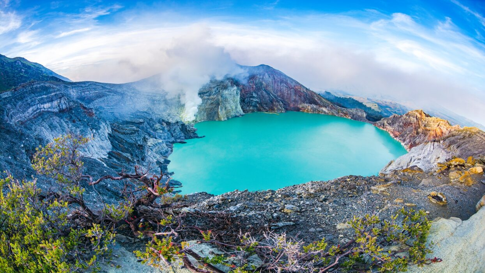
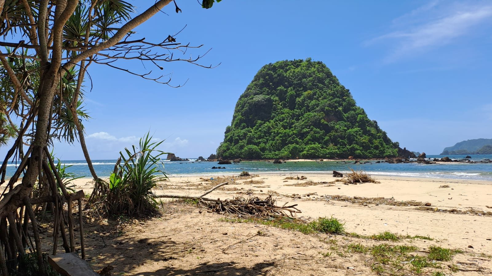
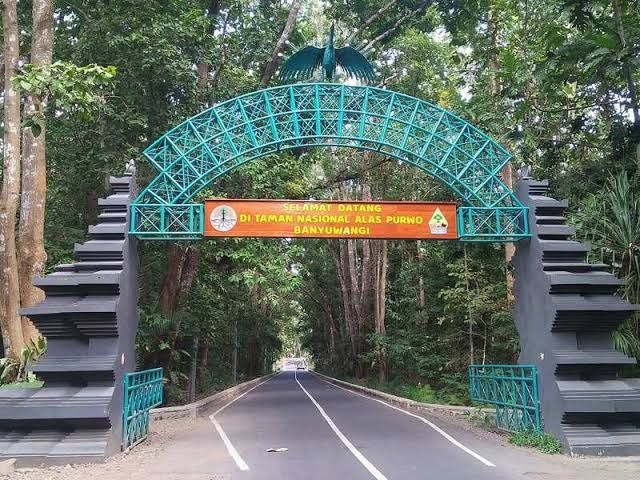

Wisata Banyuwangi
Jelajahi wisata Banyuwangi yang menakjubkan, dari Kawah Ijen hingga Pantai Pulau Merah. Nikmati alam, budaya, dan kuliner khasnya! Kabupaten Banyuwangi (Hanacaraka: ꦧꦚꦸꦮꦔꦶ, Pegon: باۑوواڠي; pelafalan dalam bahasa Indonesia: [baɲuˈwaŋi]) adalah sebuah wilayah kabupaten di provinsi Jawa Timur, Indonesia. Ibu kota dari kabupaten ini berada di Kecamatan Banyuwangi. Kabupaten ini terletak di ujung paling timur pulau Jawa di Indonesia, tepatnya di kawasan Tapal Kuda, yang berbatasan dengan Kabupaten Situbondo dan Kabupaten Bondowoso di sebelah utara, Selat Bali dan Provinsi Bali di sebelah timur, Samudra Hindia di sebelah selatan, serta Kabupaten Jember dan Kabupaten Bondowoso di sebelah barat. Kabupaten Banyuwangi merupakan kabupaten terluas di Jawa Timur dan juga kabupaten terluas ketiga di Pulau Jawa.
Kawah Ijen
Kawah Ijen adalah sebuah danau kawah yang bersifat asam yang berada di puncak Gunung Ijen dengan kedalaman danau 200 meter dan luas kawah mencapai 5.466 Hektar. Danau kawah Ijen dikenal merupakan danau air asam kuat terbesar di dunia.[1] Kawah Ijen berada dalam wilayah Cagar Alam Taman Wisata Ijen Kabupaten Bondowoso dan Kabupaten Banyuwangi, Jawa Timur. Fenomena eternal blue fire atau api biru abadi berada di dalam kawah Ijen, dan pemandangan alami ini hanya terjadi di dua tempat di dunia yaitu Etiopia (gunung Dallol) dan Ijen.[butuh rujukan] Blue fire hanya dapat dilihat oleh mata manusia saat tidak ada cahaya, karenanya waktu ideal untuk melihatnya adalah jam 2 hingga jam 4 dini hari, karena pendakian Gunung Ijen baru mulai dibuka jam 2 dini hari. Dari Kawah Ijen, kita dapat melihat pemandangan gunung lain yang ada di kompleks Pegunungan Ijen, di antaranya adalah puncak Gunung Marapi yang berada di timur Kawah Ijen, Gunung Raung, Gunung Suket, dan Gunung Rante.
Pulau Merah
Pulau Merah atau Pulo Merah ( Red Island dalam Bahasa Inggris) adalah objek wisata pantai yang terletak di Kecamatan Pesanggaran, Kabupaten Banyuwangi, Provinsi Jawa Timur. Di pantai ini terdapat sebuah bukit hijau kecil dengan tanah berwarna merah yang terletak di dekat bibir pantai. Bukit tersebut dapat dikunjungi dengan berjalan kaki saat air laut surut.[1] Di Pulau Merah terdapat Pura yang digunakan pemeluk agama Hindu melaksanakan ibadah ataupun upacara Mekiyis. Kawasan wisata ini dikelola oleh Perum Perhutani Unit II Jawa Timur, KPH Banyuwangi Selatan.
Alas Purwo
Taman Nasional Alas Purwo merupakan kawasan hutan yang memiliki luas 43.420 hektar dan memiliki berbagai macam tipe ekosistem mulai dari pantai (hutan pantai) sampai hutan hujan daratan rendah, hutan mangrove, hutan bambu, savana dan hutan tanaman. Keanekaragaman jenis flora darat di kawasan Taman Nasional Alas Purwo termasuk tinggi. Diketahui lebih dari 700 jenis tumbuhan mulai dari Tingkat tumbuhan bawah sampai tumbuhan tingkat pohon dari berbagai tipe vegetasi. Lebih dari 200 jenis diantaranya berpotensi sebagai tumbuhan obat, terbagi dalam 123 famili, dimana family Verbenaceae dan Poaceae merupakan famili yang memiliki jumlah jenis terbanyak di dalam kawasan. Selain itu, Taman Nasional Alas Purwo kaya akan jenis-jenis fauna daratan, baik kelas mamalia, aves, dan herpetofauna (reptil dan amfibi). Beberapa jenis mamalia yang dijumpai di kawasan TNAP yaitu banteng, rusa, ajag, babi hutan, kijang, macan tutul, lutung, monyet ekor panjang, linsang, luwak dan kucing hutan.